方法論比工具重要，訂閱制比帳單焦慮重要
這門課結束時你會變得很能打，理由不是模型變強，是你自己被教會了一套五步驟系統：先逼問清楚需求（grill），寫成一份規格（spec），把規格拆成一張張工單（ticket），動手實作，最後做審查。這五步在講師過去兩年不斷換模型、換工具的過程中從沒變過，這也是他敢在此刻開課的底氣。
更值得留意的是這套方法論刻意不綁定任何特定 agent，判準只有一個：能不能在終端機裡跑、能不能讀 skills。這個門檻低到幾乎涵蓋市面上所有主流 agent——Claude Code、Codex、OpenCode、GitHub Copilot，教學內容也全部用 skills 形式交付，理論上學完可以直接搬到任何一個 agent 上用。agent 這個東西汰換速度太快，押注在某一款工具的操作細節上風險太高，真正值得投資的是背後那套不隨工具更迭而過時的方法論。示範用 Claude Code，理由很直白——這是講師自己每天在用的主力工具，也是目前最多人用的一款，但一旦進入課程核心，幾乎不會再特別談論它。支撐這個判斷的還有一組數字：講師自己維護的 skills 專案星數剛跨過二十萬顆，擠進史上星數最多的 GitHub 專案前二十名，下載次數超過一千三百萬次——這不是拿來炫耀的花絮，是在回答一個隱藏的問題：如果方法論真的能脫離特定工具獨立存在，那它應該能被大規模驗證過。
方法論定調之後，緊接著要解決一個更現實的問題：免費方案完成不了這門課，第一次認真跑一個 session 就會撞牆。具體該選哪一檔並不複雜——Anthropic 這邊 Pro 是起跳點，要專業使用就往上跳到 Max（分 5X 和 20X 兩檔，課程錄製時用的是 20X，但真正需要的頂多是 5X）；OpenAI 這邊 Plus 對應 Pro 的定位，額度不夠再往 Pro 升。真正該停下來想的是訂閱制跟按量計費之間那道結構性差距：有個開發者這個月的 token 帳單，照牌價算逼近五萬美元，實際付出去的只有三千四百美元——三千兩百美元的 Claude 訂閱，加兩百美元的 Codex 訂閱，同一份工作量中間差了十幾倍。按量付費會製造一種很像家裡裝了電表的感覺，這種心態一旦滲進工作方式，人會開始做出偏離理性的選擇：明明該上最強的模型，卻為了把數字壓低硬是切成便宜模型將就，賠掉的是輸出品質。訂閱制把這個心理負擔整個拿掉，因為費用一開始就是固定的，你才有餘裕把注意力放在「怎麼把這件事做好」而不是「這次又花了多少」。最後的建議很直接：沒有特別偏好就用 Claude Code 配 Pro；想走專業路線就直接上 Max，而且不管哪一檔都建議用訂閱方案內建的預設模型。

把舞台搭好：從專案到 agent 上線
選編輯器這件事的答案出乎意料地無趣——不是因為哪一套最強，是因為免費、跨平台、夠親民，而且內建終端機。這門課大部分時間都在終端機裡跟 agent 對話，編輯器本身反而是配角，如果手上已經有慣用的工具，只要能開終端機、能看程式碼，直接繼續用也沒問題，這種不執著品牌的態度貫穿了整堂課挑工具的邏輯。
真正的儀式從終端機開始：確認 git 裝好、把課程 repo clone 下來、確認 Node.js 裝的是 LTS（長期支援版）而不是號稱最新最潮但穩定性沒保證的 Current 版本（示範時裝的是 22.21.1）。裝好之後跑 `npm install`，把一整批套件拉進 `node_modules`——其中一個叫 Sancastle 的套件，一週下載次數是十萬五千次，這個數字是在建立一個之後會用到的概念：專案依賴的每一個套件，背後都是一個被廣泛使用的獨立作品，不是憑空冒出來的黑盒子。裝完套件，下一步是把資料庫生出來，先跑 migrate 建立空的資料表結構，再跑 seed 灌進假資料，跑起來之後看到的 Cadence，就是接下來整門課要動刀的對象：一個功能齊全、有賣課程、上課、測驗的真實應用。畫面下方藏著一個容易被忽略但後面會一直用到的功能——切換登入身份的 dev UI，切到某個學生角色就能看到她已經買了哪些課，這是接下來所有「這個角色看到的畫面對不對」測試的入口。
環境搭好了，唯獨少了真正會動手做事的那個角色。裝 CLI 這段本身沒什麼好講的：依平台複製對應指令、貼進終端機、跑起來、對「是否信任這個工作區」按下同意、登入時選訂閱選項而不是 API key，同一套安裝邏輯換成 Codex 或其他 agent 一樣適用，呼應的正是前面立下的原則：工具是替換品，方法才是核心。選模型這一步才是真正該停下來想的地方，用 `/model` 指令叫出選單，建議做法是直接選訂閱方案自帶的預設模型，不用糾結該選哪一個型號。示範時選的是配了一百萬 token 上下文視窗的 Opus 5，effort 等級可以用左右鍵調整，但這裡有個容易被忽略的細節：錄這門課的當下其實用的是 medium effort 的 4.8，因為 Opus 5 那時候都還沒問世。課程內容不會因為模型版本更新而失效，重點是「用你方案裡的預設中階模型」這個選擇邏輯，不是死記某個型號名稱，型號會換，這個判斷原則不會換。最後一步是打一聲招呼，收到回應就代表設定成功——CLI 裝對了、帳號權限夠、模型選對了、網路連得通，四件事只要有一件沒到位，這聲招呼就打不通。
時間旅行與資料庫同步：兩個容易踩坑的機制
遠距教學有一個從沒被真正解決過的問題：老師在畫面上示範完一個功能，你怎麼確定自己電腦上的程式碼跟老師剛剛講的是同一個狀態？這門課的答案是一套自己寫的工具鏈。第一步是建一個叫 dev 的分支當練習場，之後隨意弄髒、隨意實驗都不會動到 main。真正的核心是 `npm run reset`：每一堂課的每個階段都對應一個或多個 git commit，跑這個指令會列出一長串可以「跳」過去的時間點，選一個就能把本機狀態瞬間對齊到影片拍攝當下的樣貌。有個帶點自嘲的示範很能說明這個機制多精準——`package.json` 裡課程平台的描述打錯字，寫成「awesome horse platform」而不是「awesome course platform」，跑 reset 選到對應的 commit，錯字瞬間被修正。一個 bug 級的打字失誤，反而成了展示時間旅行精準度最好的教材。
但 reset 有個代價：它會把自己動手加的東西一併洗掉，示範裡加了一個 foo bar 的 npm script、commit 下去，跑 reset，foo bar 直接消失，一點痕跡都不留。對還捨不得自己改動被洗掉的人，另外準備了 `npm run cherry-pick`——把某個歷史 commit 疊加到目前分支上，而不是把整條分支輾平重來。但這裡有個誠實的但書：如果對 git 的 cherry-pick 和衝突解決不熟，乾脆全程只用 reset 就好，少一個變數少一個坑——會用進階工具不代表該用。還有第三個指令 `npm run pull`，用來在課程更新時把上游主分支的新內容拉下來。三個指令背後其實是同一套自製 CLI 在跑，包成 npm script 只是不想讓學員去記 git 語法。
跟時間對齊同樣重要的，是另一件更違反直覺的事：改完程式碼、重新整理頁面，畫面卻噴出一個看起來毫不相干的資料庫錯誤。改程式碼不會讓資料庫自動跟上，這中間永遠隔著一道需要手動執行的步驟。專案裡藏著兩個性質完全不同的單位——原始碼是會編輯、決定應用行為的檔案；資料庫具體來說是一個叫 `data.db` 的檔案，安靜躺在專案根目錄下。關鍵檔案 `app/db/schema.ts` 定義的是資料庫「應該」長什麼樣子，但原始碼負責定義藍圖，資料庫不會自動變成藍圖畫的樣子，中間那道手動程序就叫 migration，理由也很實際：資料庫裡裝的是真正的使用者資料，神聖不可隨便覆寫，原始碼和資料庫必須被當成兩個各自對齊版本的東西，只要有一邊超前，系統就會報錯。有一次現場示範精準命中了這個陷阱：切換到一個改了 schema 的版本，courses 資料表被加了一個 notes 欄位，光是切換原始碼版本並沒有真的執行 migration，打開頁面直接壞掉，終端機丟出一句「no such column notes」的錯誤，跑一次 migrate 指令問題就消失。用來切換程式碼版本的那個指令只碰原始碼，不會幫你跑 migration，所以只要切換過版本，幾乎可以確定接下來要手動 migrate 一次，這不是例外狀況，是常態。好消息是這個資料庫本身沒什麼好怕的，它是個可以隨便重來的沙盒，壞了大不了重 seed，管理員、講師的帳號又會全部回來。
歸零與開窗：清掉舊設定，打開黑盒子
幾乎每個帶著一身裝備走進這門課的人，都會被同一句話潑冷水：把它全部刪掉。裝過幾個 MCP 伺服器、調過一輪設定、裝過一票 skills 和 plugins，這些堆疊起來的結果通常不是能力升級，是過度配置，大部分根本用不到，從一個乾淨的起點開始工作反而更容易把事情做好。但這不是要人不負責任地清空一切——如果那些設定是辛苦調出來的，解法不是自己動手刪，是讓 agent 自己處理，畢竟它最了解自己的設定放在哪裡：讀自己的文件、盤點設定檔案位置、備份到安全的地方，再把環境清回空白狀態，還會生成一段還原提示詞供將來直接貼上去用。後面每一個技巧為什麼有效、為什麼失效，都要在一個接近預設值的環境下驗證出來，如果 agent 還背著一堆舊設定，某個技巧是課程內容的問題還是被殘留配置搗亂，會很難判斷。
歸零之後，緊接著要做的是反方向的事：把黑盒子撬開一條縫。跟 agent 互動的體驗本質上是一個黑盒子，文字打進去、答案跑出來，中間發生了什麼完全看不見。撬開的工具是一個叫 request logger 的小程式，跑起來之後會在 localhost 8787 這個位址開一個本地網頁伺服器。操作起來只有一行設定：把一個環境變數指向這個本地伺服器，原本要直接送去 Anthropic 官方伺服器的每一筆請求，現在會先經過這個中繼站——正常轉送出去讓 agent 照常運作，同時把整包內容留一份存到本機資料夾裡。從使用者角度看什麼都沒變；但背地裡，每一次往返都被完整記錄下來了，黑盒子的內容第一次被攤在陽光下。存下來的檔案裡有一份 markdown 版本最值得看，完整攤開送給模型的系統提示詞、工具定義，全部用 XML 標籤分隔開來，再往下是完整的訊息歷史。這堂課的作用是先把工具裝好、把原理搞懂，真正的價值要到後面才會顯現：當你想知道「為什麼 agent 這樣做決定」，不用再靠猜，直接翻 log 就看得到系統到底跟模型說了什麼。
不是孤軍奮戰
自我步調的課程有一個容易被忽略的風險：卡關的時候，身邊沒有人。第一章唯一一堂不談技術操作的課，處理的正是這件事——不是教你裝什麼工具，是告訴你卡關的時候該去哪裡找人。伺服器結構分成兩層，上半部公開給所有人，下半部是付費之後才看得到的頻道。真正提問的地方，是論壇形式的專屬問題頻道：貼上問題描述，系統會自動開一個獨立討論串，跟所有訊息混在同一個頻道裡比起來，這種形式讓每個問題都有自己的空間，不容易被洗版蓋掉。身分標示上，紅色是特別樂於助人的成員被指定的榮譽身分，紫色是版主，遇到惡意洗版直接 tag 版主角色就能處理。前面八堂課把環境、工具、流程都交代完了，這堂等於把安全網張開：真正動手做練習時，難免會遇到裝置差異、版本落差、理解不到位的狀況，這些狀況不需要自己硬扛。